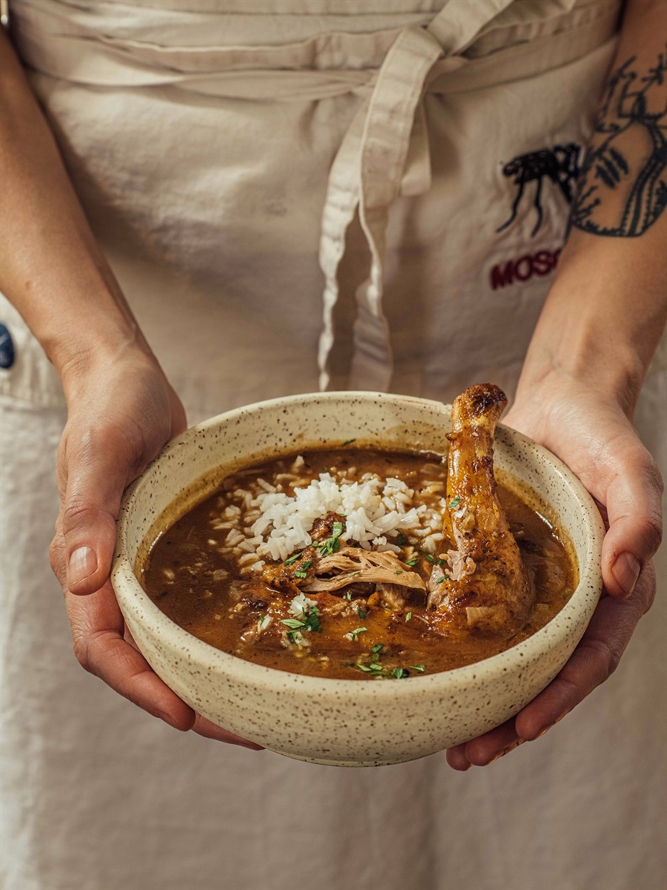

<h1>Chichen and Okra Gumbo</h1>

<h2>Ingredients</h2>
<ul>
    <li><strong>2 Cups</strong> <a href="../recipes/stewdokra.html"> Stewed Okra</a></li>
    <li><strong>1 Stick</strong> Butter</li>
    <li><strong>1 lb</strong> Shothered Chicken</li>
    <li><strong>2 Cups</strong> Chicken Stock</li>
    <li><strong>1 lb</strong> Celery</li>
    <li><strong>2 lbs</strong> Diced Onions</li>
    <li><strong>1 lb</strong> Diced Green Bell Pepper</li>
    <li><strong>2</strong> Bay Leaves</li>
    <li><strong>2 Cups</strong> Cooked Rice</li>
    <li><strong>Garnish</strong> Green Onion</li>
</ul>
<h2>Method</h2>
<ol>
    <li>Make Gumbo</li>
</ol>
